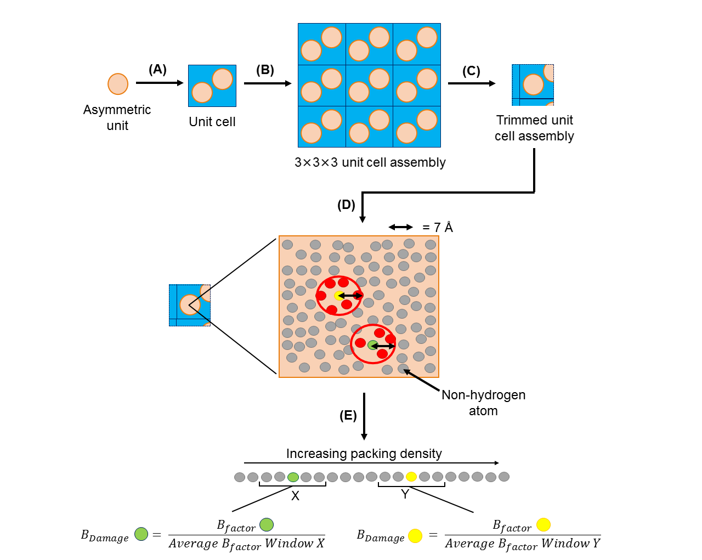
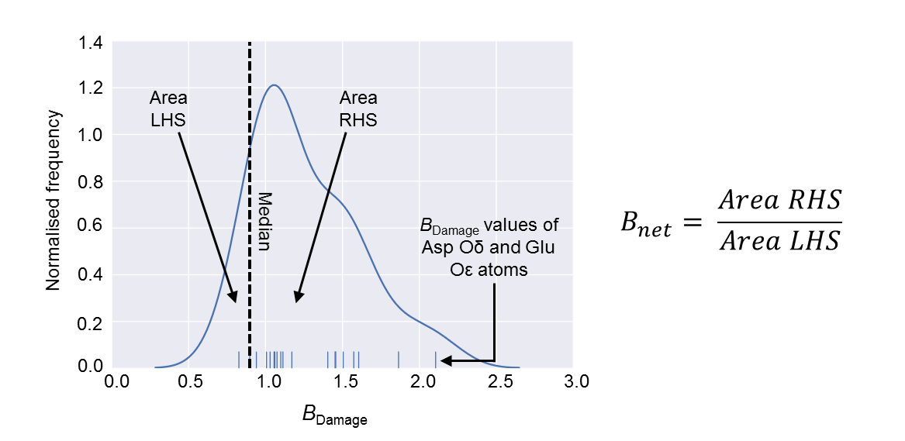

RABDAM¶
When collecting data using X-rays, crystals can suffer damage that triggers localized chemical changes in macromolecules. This phenomenon, known as radiation damage, can lead to disulfide bond breakage and the loss of carboxyl groups from glutamate and aspartate side chains. If not accounted for, these changes can result in misleading biological interpretations.
Specific radiation damage manifests as chemical changes that elevate atomic B-factor values at affected sites. However, B-factors are also influenced by other factors, such as atomic mobility, making it challenging to isolate the effects of radiation damage from mobility alone.
Interestingly, there’s a strong link between an atom’s mobility and its packing density—the number of atoms in its local environment. The BDamage metric cleverly adjusts the isotropic atomic B-factor to account for packing density. For an atom j, its BDamage value is calculated as the ratio of its B-factor to the average B-factor of atoms with similar packing density. This metric has been validated to pinpoint expected sites of specific radiation damage in macromolecular crystallography (MX) structures (Gerstel et al., 2015).
The methodology for calculating an atom’s BDamage value is illustrated below:
Here’s how it works: Starting with a PDB/mmCIF file of a protein crystal structure, RABDAM (A) generates a copy of the unit cell, followed by (B) a 3x3x3 assembly of unit cells. (C) Atoms in the assembly that are more than 7 Å away from the asymmetric unit are excluded. (D) The packing density of an atom j is calculated as the number of atoms within a 7 Å radius. (E) Atoms are grouped by packing density, and the BDamage value of atom j is calculated as the ratio of its B-factor to the average B-factor of atoms in similar packing density environments. Hydrogen atoms are excluded from these calculations.
The Bnet metric builds on BDamage, summarizing the total extent of specific radiation damage in a cryo-temperature protein crystal structure. A hallmark of radiation damage is the decarboxylation of Glu and Asp residues. The Bnet metric uses a kernel density estimate of the BDamage values of Glu and Asp side chain oxygen atoms. It’s defined as the ratio of the area under the curve on either side of the median BDamage distribution.
Since Bnet is weakly correlated with resolution, RABDAM introduces Bnet-percentile, a resolution-independent metric. This percentile ranks a structure’s Bnet value within a subset of cryo-datasets closest in resolution (typically the 1000 nearest-resolution structures in the PDB). This makes Bnet-percentile the go-to metric for comparing damage across structures.
The process for calculating the Bnet value is summarized below:
To compute Bnet, RABDAM plots a kernel density estimate of the BDamage values of Glu and Asp side chain oxygen atoms. The area under the curve to the left-hand side (LHS) and right-hand side (RHS) of the median BDamage value is measured, and Bnet is calculated as LHS divided by RHS.
RABDAM provides a comprehensive analysis of specific radiation damage by calculating BDamage, Bnet, and Bnet-percentile metrics for any standard-format PDB or mmCIF file. While BDamage can be calculated for any macromolecule, the Bnet and Bnet-percentile metrics are tailored for cryo-temperature protein crystal structures.
Data Requirements¶
To use RABDAM, you’ll need a standard-format PDB or mmCIF file containing a single model of your crystal structure. The file must include ATOM/HETATM records, as well as details about the space group, resolution, and temperature. Since BDamage is a per-atom metric, it should only be calculated for structures where B-factors have been refined per-atom, typically near the final stages of refinement. Additionally, ensure that non-ligand atoms subject to occupancy refinement are limited to alternate conformers, with occupancies summing to 1.
Queries¶
Please email kathryn.l.shelley@gmail.com.
Contributors¶
Kathryn Shelley
Tom Dixon
Jonny Brooks-Bartlett
This software was developed in the lab of Professor Elspeth Garman at the University of Oxford.
Acknowledgements¶
source: https://github.com/GarmanGroup/RABDAM
Shelley KL, Dixon TPE, Brooks-Bartlett JC & Garman EF (2018) RABDAM: quantifying specific radiation damage in individual protein crystal structures. J Appl Cryst 51: 552-559. https://doi.org/10.1107/S1600576718002509
The BDamage metric is defined and validated in:
Gerstel M, Deane CM & Garman EF (2015) Identifying and quantifying radiation damage at the atomic level. J Synchrotron Radiat 22: 201-212. https://doi.org/10.1107/S1600577515002131
The Bnet and Bnet-percentile metrics are defined and validated in:
Shelley KL & Garman EF (2022) Quantifying and comparing radiation damage in the Protein Data Bank. Nat Commun 13: 1314. https://doi.org/10.1038/s41467-022-28934-0